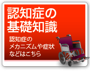

|

|
 |
 |
| 認知症に関しては各方面で研究が進められています。いくつかをご紹介します。ここに掲載されている他の研究機関等の情報がございましたら、下記までご連絡ください。順次、掲載してまいります。 |
 |
- 日本認知症ケア学会
認知症ケアに関する日本唯一の学会。認知症高齢者等のケアに関する学術的な研究の推進、ケア技術の教育、社会啓発活動を実施。認知症ケア専門士の認定も行なっている
- 日本老年精神医学会
老年精神医学からの視点を持って 身体疾患に伴う精神障害や老年期に発症する社会的要因が複雑に関わりあう症状や認知症を取り上げている
- 日本老年行動科学会
高齢者の徘徊や異常な行動などに対し、勘と経験に頼るケアではなく、行動科学的な視点を持ってその解明に努め、現場に反映させ、ケアの向上と高齢者の行動改善に取り組んでいる。
- 社団法人日本老年医学会
心疾患、脳血管病変に関わる血管病変、脂質代謝、糖尿病、老年医学、神経疾患等に関する専門研究を行う。福祉と医療の連携をはかっている。
- 日本精神神経学会
日本精神神経学会は 歴史が古く １９０２年に、精神医学の呉秀三と内科学の三浦謹之助の２名が主幹となり、発会。精神医学と神経学の研究を進めている。
- 日本認知症学会
認知症に関連する臨床および基礎の諸分野の科学的研究の進歩発展の成果を社会に還元することを目的としている
- 国立長寿医療センター研究所
老化のメカニズムの解明とその制御、アルツハイマー病や骨粗鬆症を中心とする老年病の発症機序解明と予防･治療法の開発、高齢者のQOLを改善する為の生活機能改善方法の開発や介護のあり方の研究を行なう。
- 認知症介護情報ネットワーク
国の補助事業として認知症介護研究・研修センターが 認知症介護に関する情報共有化、認知症介護研究の促進、介護職の教育支援などを行なうことを目的として構築された情報ネットワークです
- 財団法人ぼけ予防協会
毎日新聞創刊１２０周年記念事業として、認知症の予防・治療に関する調査研究および社会的な介護体制づくり、介護家族への支援活動などを行う
- 厚生労働省
介護・福祉や医療に関する行政情報や各種統計情報を掲載。
|
|